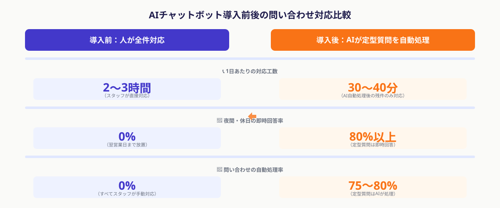

学習塾・教育事業者で問い合わせ対応の負荷が増し続ける理由
学習塾・スクール・予備校などの教育事業者は、外食・小売などと比べて「問い合わせ1件あたりの背景事情が複雑」という特徴があります。生徒の学力・目標・家庭の方針・コース選択といった個別性の高い情報が絡み合うため、返答を定型化しにくい問い合わせが多く発生します。一方で、全問い合わせのうち70〜80%は「次の授業はいつですか」「月謝の引き落とし日は？」「体験授業の申し込みはどうすればいいですか」といった答えが決まっている定型質問という実態があります。
この定型質問が積み重なることで、講師・事務スタッフに以下の問題が起きています。
① 授業・採点準備の時間が削られる
1件の問い合わせ対応に平均3〜5分かかるとして、1日30件あれば1.5〜2.5時間が消費されます。少人数運営の教育機関では、この工数が授業のクオリティに直結します。
② 営業時間外の問い合わせに対応できない
保護者からの問い合わせは夜間・休日に集中する傾向があります。「翌朝に返信が来た」という体験が続くと、体験授業や入塾の検討段階で他の塾に流れるリスクが生じます。
③ 担当者が不在だと回答できない属人化
料金体系・コース内容・振替ルールなどを把握しているのが特定のスタッフのみというケースが多く、その人が休んだ日は「確認してから折り返す」という対応が頻発します。
学習塾・スクール・予備校などのWebサイトやLINE公式アカウントに設置し、生徒・保護者からの問い合わせにAIが自動応答するシステム。よくある質問（FAQ）への自動回答に加えて、ChatGPT APIなどの生成AIを組み込むことで、多少言い回しが違う質問にも自然な日本語で回答できる。個別相談・クレームなど人の判断が必要な問い合わせはスタッフへ自動転送する「エスカレーション機能」と組み合わせて使う。
AIチャットボットで自動化できる問い合わせの種類と導入効果

教育事業者でAIチャットボットが特に効果を発揮するのは、次の4カテゴリの問い合わせです。
① 授業・スケジュール関連
「次の授業はいつですか」「〇月〇日は休講ですか」「振替授業の申し込み方法は？」など。カレンダー情報と連携させれば、特定の日程の開講情報もリアルタイムで回答できます。
② 料金・支払い関連
「月謝はいくらですか」「兄弟割引はありますか」「教材費はどうなっていますか」「引き落とし日はいつですか」など。料金表がドキュメント化されていれば、これをチャットボットに読み込ませるだけで対応できます。
③ 入塾・体験授業の申し込み受付
「体験授業に申し込みたいのですが」「入塾するにはどうすればいいですか」といった問い合わせに対し、ヒアリング項目をチャット上で自動収集し、入力内容をスタッフに通知する仕組みをつくることで、申し込みから面談予約まで自動化できます。
④ コース・カリキュラム関連
「中学2年生の数学コースはありますか」「英検対策コースはいつから始まりますか」「〇〇大学志望ですがどのコースが合いますか」など。カリキュラム資料をAIに読み込ませることで、ある程度の個別対応にも応えられます。
・1日あたりの問い合わせ対応工数：2〜3時間 → 30〜40分（AIが定型質問の75〜80%を自動処理）
・夜間・休日の問い合わせへの即時回答率：0% → 80%以上
・入塾検討中の保護者からの問い合わせ放棄率：約20〜30%削減（夜間も即時回答されることで翌日他塾に流れるリスク低減）
・スタッフ1人あたり月間削減工数：約30〜50時間
スポット外注でAIチャットボットを導入する3ステップ

システム開発の専門知識がなくても、次の3ステップを踏むことでAIチャットボットを導入できます。STEP1は社内作業、STEP2・3はスポット外注と役割を分けることで、内部の工数を最小化しながら導入できます。
STEP 1：自動化する問い合わせ範囲を決め、Q&Aリストを整備する（社内作業：3〜7日）
最初に行うべきは、塾で実際に届いている問い合わせの棚卸しです。過去3〜6か月のLINEメッセージ・電話ログ・メール履歴を確認し、繰り返し発生している質問を洗い出します。「答えが1通りに決まる質問」だけを最初の対象として選び、Q&Aリスト（質問文・回答文のペア）を50〜100問作成してください。
Q&Aリストを作る際の3原則：
①回答は200字以内に収める（スマートフォンの画面で読みやすい長さ）
②言い回しのバリエーションを3〜5パターン登録する（「月謝は？」「授業料はいくら？」「費用を教えて」等）
③「これ以上はスタッフに繋いでください」という判断基準を明文化する（クレーム・退塾相談・個別指導のカスタマイズ要望等）
このリストが後工程のチャットボット設定精度を左右します。社内で用意できる質の良いQ&Aリストがあればあるほど、スポット外注に依頼した際の設定工数が減り、費用も下がります。
STEP 2：チャットボットツールを選定し、スポット外注でFAQ設定・テストを実施する（外注：1〜2週間）
Q&Aリストができたら、スポット外注エンジニアにツール選定と初期設定を依頼します。教育事業者に向いているツールは大きく2パターンあります。
・LINEチャットボット型（推奨）：LINE公式アカウントのMessaging APIとチャットボットプラットフォーム（Botpress・Manychat・Dialogflowなど）を組み合わせる。保護者・生徒がすでにLINEを使っているため導入後の利用率が高い。ChatGPT APIを接続することで自由文の質問にも対応できる。
・Webサイト埋め込み型：塾のWebサイトにチャットウィジェット（Intercom・Zendesk・LiveChatなど）を設置し、AIが初期回答を行う。問い合わせページへの流入を取りこぼさない効果がある。
スポット外注エンジニアへの依頼内容は「ツール選定提案・Q&A設定・テスト・スタッフ向けマニュアル作成」を一式でまとめて依頼するのが効率的です。費用目安は5〜20万円・期間は1〜2週間です。
STEP 3：LINE・Webサイトに組み込み、スタッフ運用ルールを整備して本稼働させる（外注＋内部：3〜5日）
テスト完了後、本番環境への組み込みと運用ドキュメントの整備をスポット外注と連携して行います。以下の3点を必ず整備します。
・エスカレーションルール：AIが「わかりません」と判断した場合に特定スタッフのLINEまたはメールへ自動転送する設定。転送時に「この問い合わせについてはX分以内に返信する」というルールをスタッフ全員で共有します。
・Q&A更新フロー：月1回、新たに発生した定型質問をQ&Aリストに追加し、チャットボットに反映するサイクルを設計します。担当者を決めて更新作業を月30〜60分以内に収めるシンプルな運用にしておくことが継続のコツです。
・利用状況のモニタリング：月間の自動応答成功率・エスカレーション発生件数・よく質問されるトピックをダッシュボードで確認できるようにしておくと、Q&Aの改善がデータに基づいて行えます。
費用目安とツール選定のポイント
学習塾・教育事業者がAIチャットボットを導入する際の費用構成は、初期費用（スポット外注）と継続費用（ツール月額）の2つに分かれます。
初期費用（スポット外注）
・Q&Aリスト整備支援（内部作業の半分を外注）：2〜5万円
・ツール選定・FAQ設定・テスト・マニュアル作成一式：5〜15万円
・LINE公式アカウントへの組み込み＋ChatGPT API連携：追加3〜10万円（高度な自由文対応が必要な場合）
→ 合計目安：5〜20万円（機能範囲による）
継続費用（月額ツール料金）
・LINE公式アカウント（従量課金）：メッセージ数が多い月で2,000〜5,000円程度
・チャットボットプラットフォーム（Botpress等）：無料プランあり〜月額5,000〜2万円
・ChatGPT API（使用量に応じた従量課金）：月数百〜数千円
→ 合計目安：月5,000〜25,000円
①LINE連携の可否：国内の学習塾では保護者・生徒との連絡手段がLINEであるケースが大半です。LINEに対応していないチャットボットツールを選ぶと利用率が上がりません。LINE公式アカウントのMessaging APIに対応しているかを必ず確認します。
②日本語の自然文理解精度：英語に特化したチャットボットツールの中には、日本語の質問に対する精度が低いものがあります。試用期間中に実際の問い合わせ文例でテストして確認します。
③個人情報（生徒情報）の取り扱い：チャットボットに生徒名や学年情報を入力させる設計にする場合、個人情報保護の観点からどのサーバーに保存されるか・暗号化されているかを確認します。国内サーバーのみ使用可というポリシーを持つツールを選ぶ企業も増えています。
ANKENでは、学習塾・スクールへのAIチャットボット導入経験を持つエンジニアとのマッチングを無料でご相談いただけます。Q&Aリストの整備から、ツール選定・LINE連携・運用設計まで必要な範囲だけスポット発注できます。
よくある質問
- Q. 学習塾でAIチャットボットを導入するのに必要な期間はどれくらいですか？
- A. Q&Aリストが整備済みであれば、スポット外注を活用して最短1〜2週間で本稼働できます。リスト作成から始める場合は3〜4週間が目安です。
- Q. 自塾にエンジニアがいなくても導入できますか？
- A. 可能です。ツール選定・初期設定・LINE連携・テストをスポット外注エンジニアに一式委託することで、社内の技術知識ゼロでも導入できます。初期費用の目安は5〜20万円です。
- Q. 導入後のQ&A更新は社内だけでできますか？
- A. はい。管理画面からQ&Aを追加・変更できるツールが主流で、月1回30〜60分の更新作業であれば非エンジニアでも対応できます。大幅な機能追加が発生した場合だけ外注すれば十分です。
まとめ
学習塾・教育事業者がAIチャットボットを活用することで、定型問い合わせ対応の最大80%を自動化し、スタッフが授業準備・個別相談・生徒サポートに集中できる環境をつくれます。24時間即時回答によって夜間・休日に届く保護者の問い合わせも取りこぼさず、入塾検討段階での離脱リスクを減らす効果も期待できます。
実装の流れは明確で、①社内でQ&Aリストを整備 → ②スポット外注でツール設定・テスト → ③LINE/Webに組み込んで運用ルールを整備という3ステップです。初期費用5〜20万円・月額5,000〜2万5,000円で導入でき、スポット外注を使えば社内にエンジニアがいなくても最短2週間で稼働できます。まずは現在の問い合わせ内容を棚卸しして、Q&Aリストを作成することから始めてみてください。